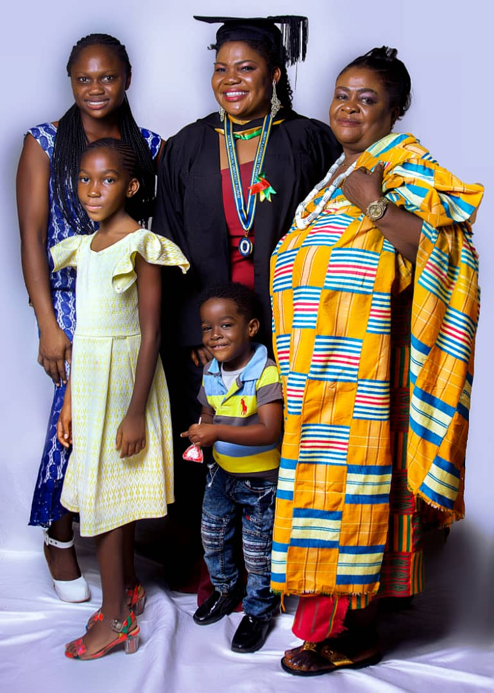
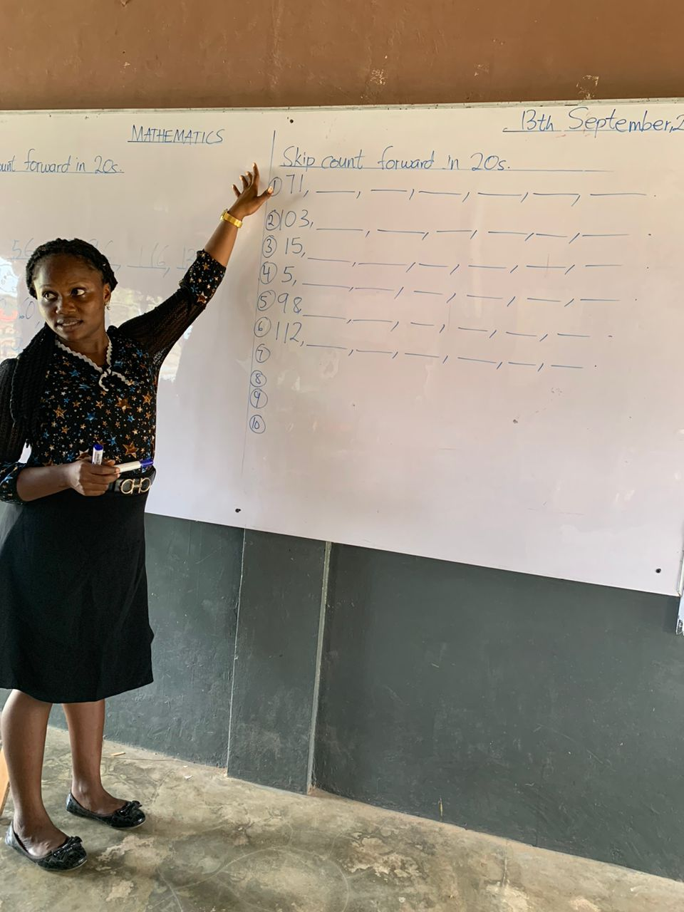

Welcome to my life story!
Every story has a beginning and mine begins with a young girl full of dreams, curiosity, determination and hope for the future. My name is Mary Madjikor Mensah, and I am the fourth child in my family of six children. Growing up in a lively home filled with siblings taught me many things about love, sharing, responsibility, and resilience. My childhooh was filled with memorable moments. Life was simple, yet beautiful. I enjoyed the little things that made growing up special. These early experiences shaped who I am today and taught me the value of family, hard work and perseverance.
My Family

Family has always been an important part of my life. I have many beautiful memories with my parents and siblings. The love and support within my family have been one of the strongest foundations in my life journey. Some of my most treasured pictures are those taken with my family, as they remind me of the love and bond we share.
Teaching Journey

After high school, I took on a role to teach as a teacher. For about six to seven years, I dedicated myself to teaching in order to support my education. Teaching was not just a jon for me;it was a passion,a talent and my profession. It was also a larning experience. Guiding students interacting with collegues, and participating in school activities helped me grow personally and professionally.